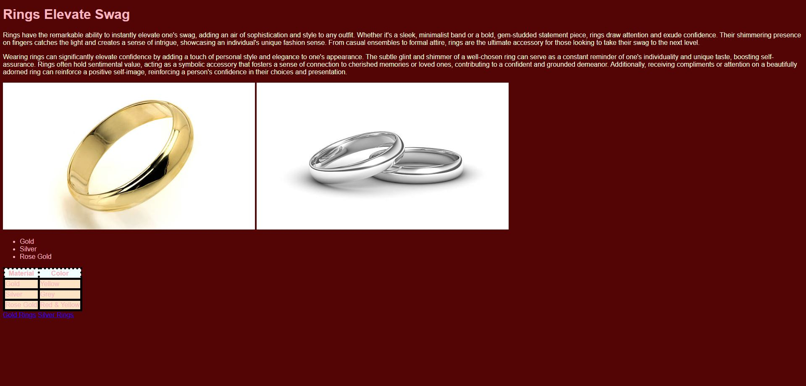
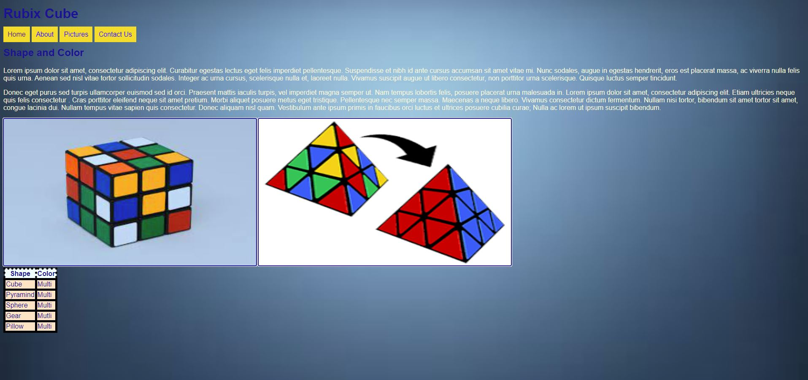
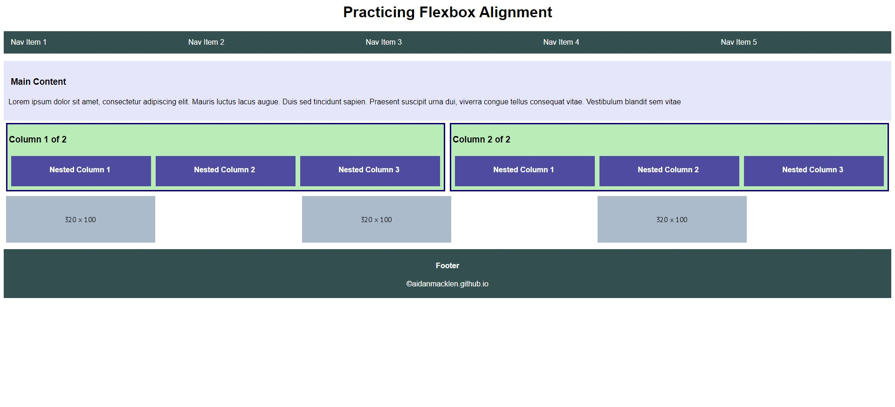
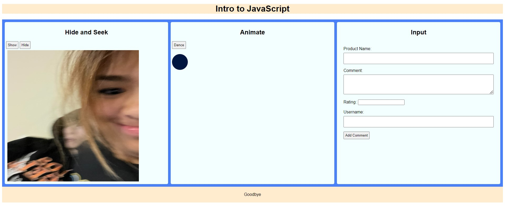

Assignment 1 - Basic HTML
In this assignment, I created the basic setup for my html structure of my website for the future of the course. I also made a simple website about rings.
Assignment 2 - Basic CSS
In this assignment, I used css to bring my main website to life. Along with this, I created a website of my own topic (mine was about rubix cubes).
Assignment 3 - Page Layout
In this assignment, I was tasked with remaking a given format mainly utilizing flexboxes.
Assignment 4 - Recreate CSS Page

In this assignment, I was tasked with remaking a the page of the UofSC website. This was quite challenging
Assignment 5 - JavaScript, Buttons, Functions, and more
In this assignment, I was tasked with remaking a given format mainly focusing on the use of JavaScript, Functions, and Buttons.
Assignment 6 - Conditionals

In this assignment, I was tasked with remaking a given format mainly focusing on the use of Javascript to build an age organizer and fundraising thermometer.